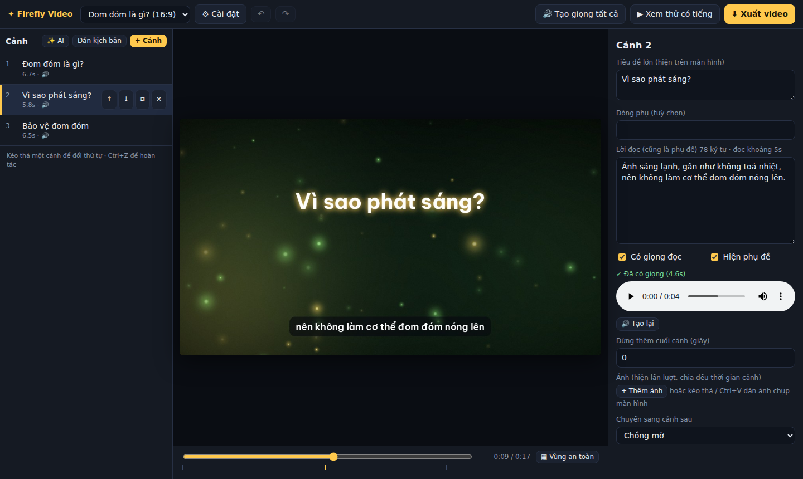

Dựng video giải thích ngay trên máy bạn
Dán kịch bản, Firefly Video lo giọng đọc, phụ đề, ảnh và chuyển cảnh trên nền đom đóm. Xuất tới 2K 60fps cho Reels, Shorts, TikTok hoặc YouTube.
Miễn phí, giấy phép MIT. Chạy trên Windows, macOS và Linux.

localhost:8765.Một tool, đủ các bước từ kịch bản đến file video
Mỗi đoạn trong kịch bản là một cảnh. Bạn chọn cảnh để sửa chữ, thêm ảnh, nghe thử, rồi xuất.
- Giọng đọc
- Edge TTS miễn phí. Khi giọng chính lỗi, tool tự chuyển sang Piper (chạy offline) hoặc gTTS để video vẫn dựng được.
- Phụ đề
- Tự chia câu, đổi cụm đúng lúc từ đầu cụm được đọc; có tuỳ chọn tô sáng từ đang đọc.
- Khung hình
- 9:16, 16:9, 1:1 và 4:5, kèm lớp phủ vùng an toàn để chữ không bị giao diện app che.
- Ảnh và chuyển cảnh
- Kéo thả hoặc dán ảnh chụp màn hình bằng Ctrl+V; ảnh dạng thẻ nổi, vừa khung có nền mờ hoặc toàn màn hình.
- Âm lượng
- Chuẩn hoá về −14 LUFS như YouTube và Facebook, nhạc nền tự nhỏ lại khi có lời.
- Xuất video
- Báo trước thời gian và dung lượng dự kiến, dùng GPU NVIDIA, Intel hoặc AMD nếu có, và chạy tiếp được khi bị gián đoạn.
- Hoàn tác
- Ctrl+Z và Ctrl+Shift+Z cho mọi thao tác, kể cả trong Cài đặt; giọng đã tạo không mất khi hoàn tác.
- Kịch bản AI
- Tuỳ chọn: nhờ mô hình Ollama chạy trên máy viết bản nháp, bạn sửa rồi mới tạo cảnh.
Cài và chạy trong vài phút
Không cần cài FFmpeg riêng. Lần đầu chạy tool tự tạo môi trường Python riêng và cài thư viện.
-
Tải và giải nén
Cần Python 3.10 trở lên. Lần đầu cần internet, khoảng 1 phút; các lần sau khởi động dưới 1 giây.
-
Bấm đúp file khởi động theo hệ điều hành
Windows run.batmacOS FireflyVideo.commandLinux / WSL ./run.sh -
Làm việc trong trình duyệt
Tool tự mở
http://localhost:8765. Tạo dự án, dán kịch bản, tạo giọng, xem thử rồi xuất video. Dự án tự lưu trên máy bạn.
Về internet: giọng Edge TTS cần mạng. Muốn tạo giọng hoàn toàn offline thì cài Piper theo hướng dẫn trong tài liệu giọng đọc. Cũng có bản đóng gói .exe không cần cài Python, bạn tự build bằng build_exe.bat.
Tài liệu
Hướng dẫn chi tiết nằm trong thư mục docs/ của repo.
- Tính năng chi tiếtXuất video, âm lượng, hình ảnh, vùng an toàn, dọn file.
- Giọng đọc và phụ đềGiọng dự phòng, cài Piper, biến môi trường.
- Kịch bản AIDùng Ollama để viết bản nháp.
- Nhật ký và xử lý lỗiBảng mã lỗi và cách khắc phục.
- Đóng gói .exeBuild bản chạy không cần Python.
- Phát triểnCấu trúc mã giao diện và cách chạy test.